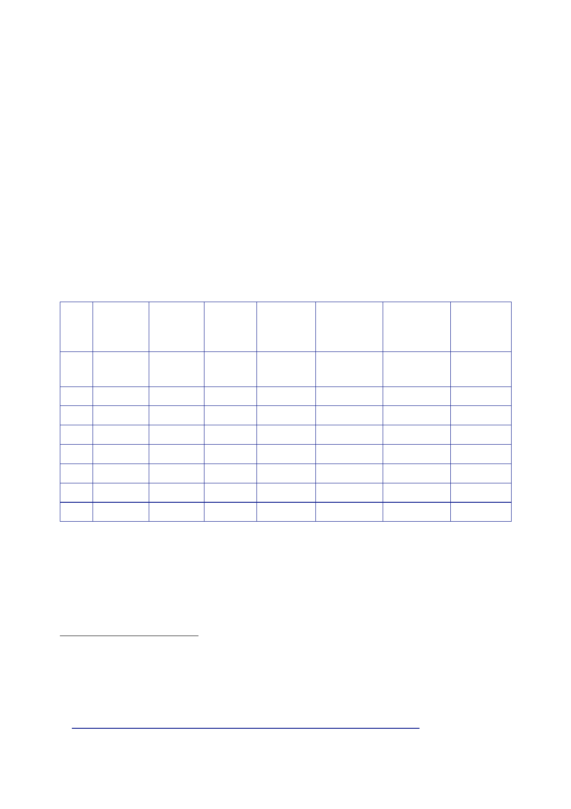

The Report
of the Iraq Inquiry
350.
On 26
February, Mr Hutton placed in the House of Commons Library a
list of
all
individuals held in UK detention facilities in Iraq, first at the
Shaibah Divisional
Temporary
Detention Facility and subsequently at the Contingency Operating
Base
in
Basra.138
The list
had been compiled following a review of the record of
detainee
numbers
commissioned by Mr Browne “to satisfy himself that appropriate
procedures
were in
place to ensure that persons captures by UK forces and transferred
to US
detention
in Iraq were treated in accordance with UK policy and legal
requirements”.
351.
Mr Hutton
told the House of Commons that some previous government
statements
on the
number of detainees had been inaccurate; on three occasions they
had
overstated
the number of detainees held in the period following January 2004
by 1,000.
The
information below was placed in the Library of the House of Commons
by Mr Hutton
on the same
day.
Interned
Released
Escaped Deceased
Transferred
to
US
Transferred
to
Iraqi
system
Detainees
held
at
year
end
Dec
2003
2003
2004
2005
2006
2007
2008
Total
44
230
47
136
77
12
105 +
546
9
219
21
66
11
491
1
11
12
1
1
140
2 124
23
12
37
107
35
42
6
141
0
352.
Mr Miliband
visited Baghdad and Basra on 26 and 27 February.142
In a minute
to
Mr Brown
reporting the visit he described it as:
“… an
opportunity to highlight with the GoI in Baghdad our new and
positive agenda
and to
explain that we want to use 2009 to build up a comprehensive
UK-Iraq
138
House of
Commons, Official
Report, 31
January 2003, columns 394-397.
139
House of
Commons Library, 26 February 2009, ‘Record of Detainees – Review
Conclusions;
Oral Statement
by Defence Secretary – 26 February 2009’.
140
These
individuals were transferred from US custody when the Shaibah base
opened in
December 2003.
141
This number
includes 14 individuals released on bail.
142
Letter
Miliband to Prime Minister, 9 March 2009, ‘My Visit to Iraq: 26-27
February’.
440